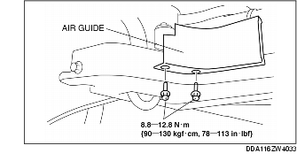
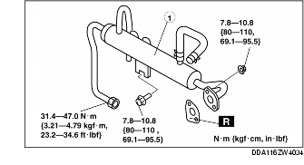

EGR cooler removal/installation [ZY]
1. Disconnect the negative battery cable.
2. Remove the air cleaner cover and the air hose. (See INTAKE-AIR SYSTEM REMOVAL/INSTALLATION [ZY].)
3. Remove the air guide for easier access.

4. Drain the engine coolant. (See ENGINE COOLANT REPLACEMENT [ZY].)
5. Remove in the order indicated in the table.

6. Install in the reverse order of removal.